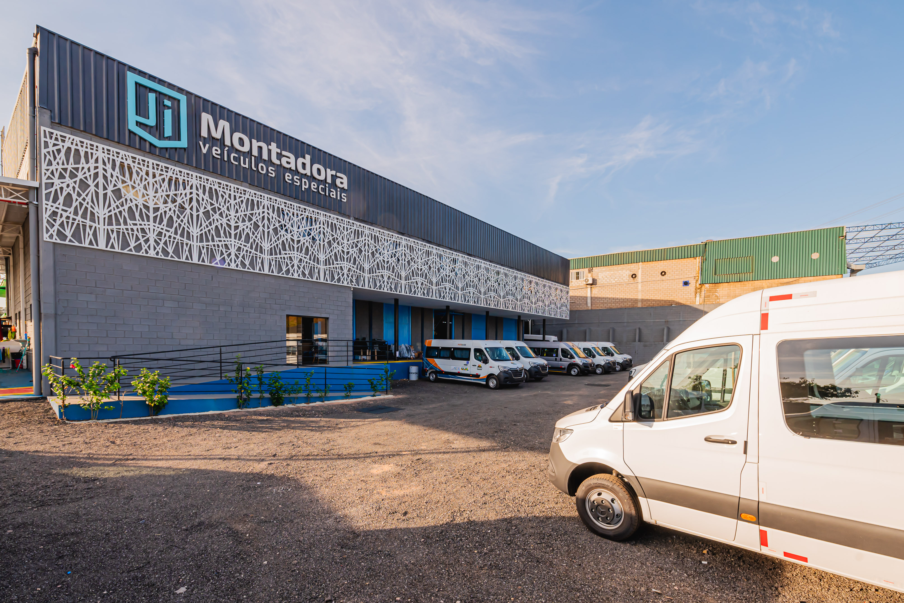

Portal operacional
Acesse os módulos
da operação.
Um ponto de entrada simples para a gestão integrada de cadastros, compras, PCP e produção.
Ver módulos disponíveisAmbiente JI
Módulos de trabalho
Selecione a área conforme sua atividade. O acesso e as permissões continuam sendo definidos dentro de cada módulo.
JI Montadora
Transformando processos em veículos especiais.